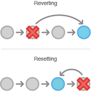

par Benjamin DIELEMAN
décembre 2019


Modifier ses commits
git commit --amend
- Modifier le dernier commit
- - Son contenu
- - Ses metas (auteur, date, titre)
git commit --amend
nano index.html
git add index.html
git st
git ci
=> Oups
touch {autre-fichier.html}
nano index.html
git add .
git ci --amend
git reset vs git revert

git reset
- Déplace la référence de la branche
- ⚠ à utiliser avec vigilance
=> Résultat : supprime les commits
git reset
nano index.html # + commit
nano fichier-2.html # + commit
nano fichier-3.html # + commit
=> Ça ne me plait pas
# Supprime les 3 derniers commits mais on garde le contenu
git reset HEAD~3
# => Refaire les commits comme on veut
# ...on ne garde rien
git reset --hard HEAD~3
git reset --hard origin/master
git revert
- Bug en production
- => Génère le commit inverse de celui ciblé
# Annule le commit bfa6ec4
git revert bfa6ec4
# Annule l'avant dernier commit
git revert HEAD~1
git rebase

git rebase
L'outil merveilleux !=> Mais aussi un des plus complexes
Rebase = Ciseau
=> ⚠ à manipuler avec précautions
git rebase
Récupérer les dernières modifications du master
git checkout master
git pull
git checkout ma-branche
git rebase master
Ré-écrire l'historique de ma branche
git checkout ma-branche
git rebase -i master
# Ouvre un éditeur pour
# - Ordonner les commits
# - Regrouper / Fusionner
# - Modifier
# - Ignorer
git rebase ✄
Déplacer une branche

git checkout fix-bug
git rebase D --onto master
Et la gestion des conflits
pull, merge, stash, cherrypick, rebase... : source de conflits=> Suivre les conseils de la console
=> Précision + Patience !
error: impossible d'appliquer a51640d...
Lorsque vous aurez résolu ce problème,
lancez "git rebase continue".
Si vous préférez sauter ce patch,
lancez "git rebase skip" à la place.
Pour extraire la branche d'origine et stopper le rebasage,
lancez "git rebase abort".
Autres commandes utiles
git stash: mettre de côté des modificationsgit cherrypick: picorer un commitgit reflog: Arghhhh j'ai cassé mon historiquegit bisect: Débug intelligentgit tag: Les étiquettes (release, mep...)
Énormément de commandes / options
Sources
- Fortement inspiré par le blog : https://www.miximum.fr/
- Tutoriel (en) de bonne qualité : https://www.atlassian.com/git
- Documentation officielle : https://git-scm.com/doc
- Cheat : https://www.atlassian.com/git/tutorials/atlassian-git-cheatsheet
- Cette formation : https://github.com/benito103e/reactjs-formation-git-iut